日吉高原や中山道方面の東濃と､八百津･川辺のお店です｡
山の中にある､庭にブランコのある手作りシフォンのカフェ
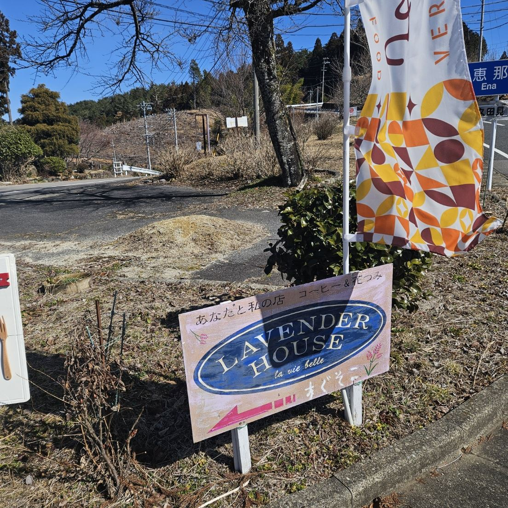
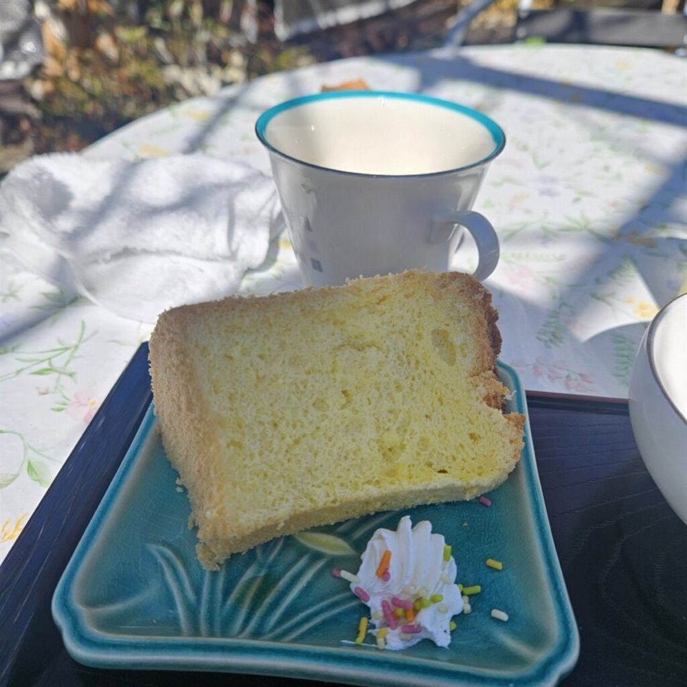
八百津の山の中にあるカフェです｡自販機が使えずに困っていたところで見つけて立ち寄りました｡広い庭にはブランコや遊具があります｡
小鳥のさえずりを聞きながら､コーヒーと手作りのシフォンケーキをいただきました｡近くの見行山の登山口へ登る前のひと休みにもおすすめです｡
川辺町の人気店､川辺卵の鉄板オムライス
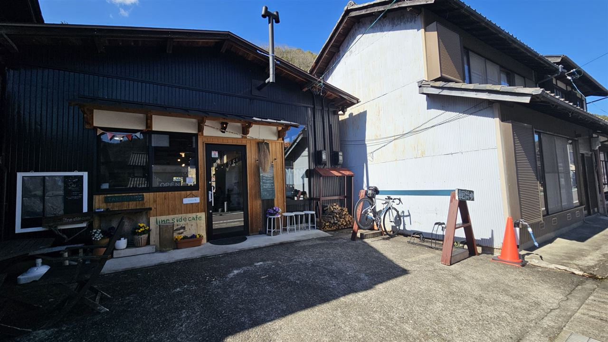
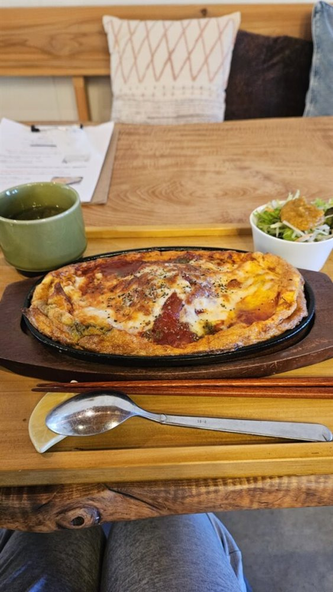
川辺町にある人気のカフェで､バイクラックも用意されています｡1時過ぎに着いてもお客さんでいっぱいでした｡
注文したのは､川辺卵を使った鉄板オムライス｡ほくほくになって帰ってきました｡晴れた日のライドの締めにぴったりです｡
川辺町のパークサイドテラスで､景色を見ながらモーニング
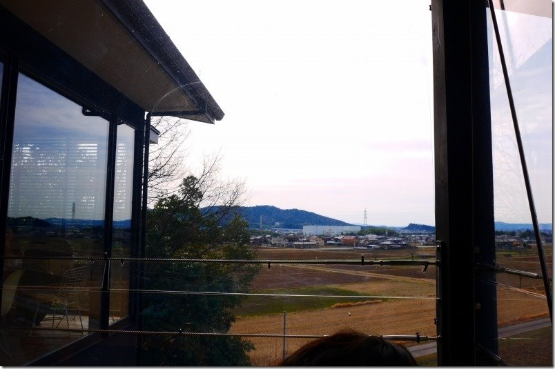
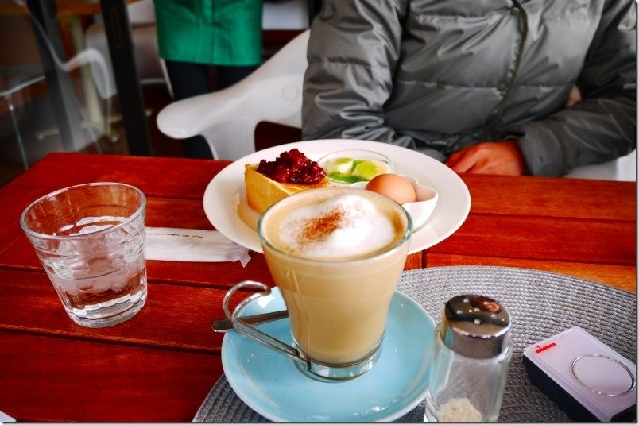
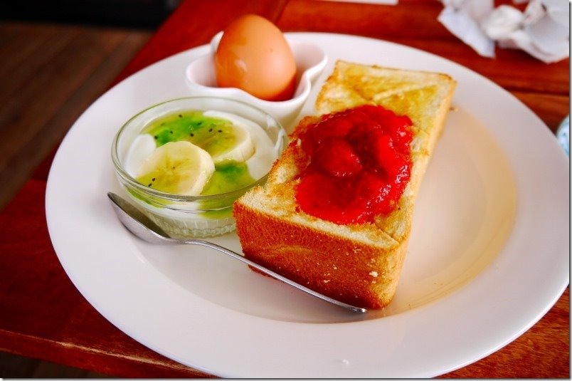
川辺町の高台にある､景色のいいおしゃれなカフェです｡テラス席は透明なガラス板が風をさえぎってくれるので､肌寒い季節でも気持ちよく過ごせます｡
モーニングのトーストについてくる､果肉ゴロゴロのジャムが絶品でした｡山之上の果樹園を抜けて向かうのがおすすめのルートです｡
加子母の明治座のふもと｡やさしい味のオムライスランチ
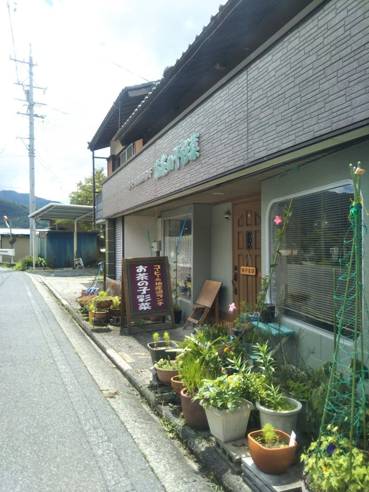
中津川市加子母の､明治座のふもとにある､コーヒーと地産地消ランチのお店です｡玄関先をかざる花の鉢が､とてもすてきです｡
加子母の大杉を見にいったライドで立ち寄り､オムライスをいただきました｡疲れた体にとてもやさしく､おいしい味でした｡
加子母の大杉や明治座の見学とあわせて､のんびりランチをするのがおすすめです｡
御嵩の山の上にある､日当たり抜群のカフェ｡サイフォンコーヒーとブランコが名物
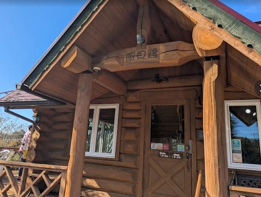
御嵩町の山の上にあるカフェです｡日当たりが抜群で､ゆっくり過ごせる明るい雰囲気が魅力です｡
コーヒーはサイフォンでいれてくれるのが特長です｡敷地にはベンチや､ウッドでつくったブランコもあり､自転車で訪れる人たちに大人気のお店です｡
セキサイでも､2016年の御嵩へのカフェライドの行き先に考えたり､2017年には｢家族DE風見鶏ライド｣が開かれたりと､おなじみの立ち寄り先です｡なお､定休日にあたることもあるので､出かける前に確認しておくと安心です｡
大正村のそば､元気な大将の寿司屋｡チラシとそばのセットが480円
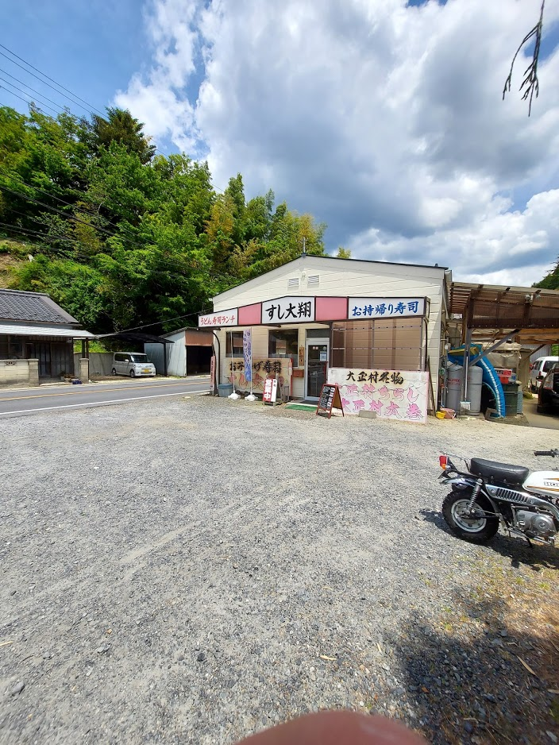
恵那市明智､大正村の近くにある､うどん･寿司のお店です｡ピンクの看板とお持ち帰り寿司ののぼりが目印です｡
2021年5月の訪問時､チラシ寿司とそばのセットのランチが480円でした｡お酢のクエン酸､魚介のタンパク質､そばの組み合わせは､実はサイクリングの補給にぴったりです｡チラシ寿司なので､出てくるのも早いのがうれしいところです｡
ご家族で営んでいて､みなさん楽しそうに働いています｡大将はとても元気で､お会計のときに｢とてもおいしかった｣と伝えると､元気いっぱいに｢アリガトヤッシター!｣と返してくれました｡昔ながらの温かいお店です｡
恵那山を望む山岡の高台で味わう､玉子がインパクト大の｢野内のカツ丼｣
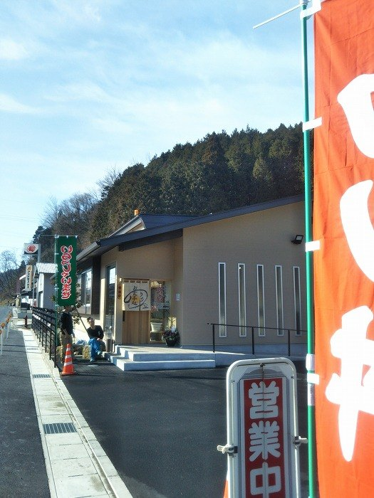
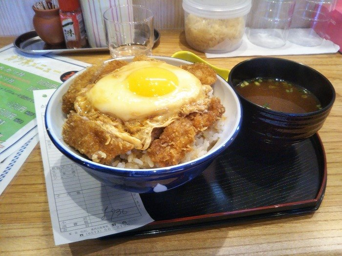
岩村から約5km､山岡町に入ってすぐのところにある食事処です｡｢野内のカツ丼｣の看板が岩村へ行くたびに気になっていた､とブログに書かれているほど､サイクリストの間で目に留まるお店です｡呼び名は｢のうちのカツ丼｣で､アクセントは｢野｣におくのが地元流とのことです｡
2017年12月に新店舗が移築オープンした直後に訪れたときは､12時前でも店内は人でごった返していました｡地元で長く愛されてきたお店の新しい門出を､多くの人が祝う様子が印象的でした｡
大盛りカツ丼は､玉子ののせ方がなんといってもインパクトがあり､ボリュームもたっぷりです｡2018年秋の東濃ライドでは､ショートコースのゴールとしてここに立ち寄り､大盛りで補給しました｡岩村城下のまち歩きと合わせて走る､東濃ライドのお楽しみのひとつです｡
飯地高原ヒルクライムの麓で､お好み焼きが楽しみなお店
恵那市の飯地高原の麓にある飲食店です｡飯地高原は約20分のヒルクライムが楽しめる人気のコースで､この麓にあるお店は､走る前後の立ち寄り先にぴったりの立地です｡
セキサイでは､飯地高原を登る前に､ここのお好み焼きをいただく計画を立てたことがあります｡ただ､営業日が限られているようで､ブログに書いた2018年と2019年の訪問時は､いずれもお休みでした｡2018年には｢一ヶ月に3回しかやっていない幻のお店｣と書いています｡
訪れる際は､営業日を事前に確認してから出かけるのがおすすめです｡開いていた日にあたれば､飯地高原を走ったあとの､うれしいご褒美になるお店です｡
東濃ライドの途中にある､焼きたてパンのお店
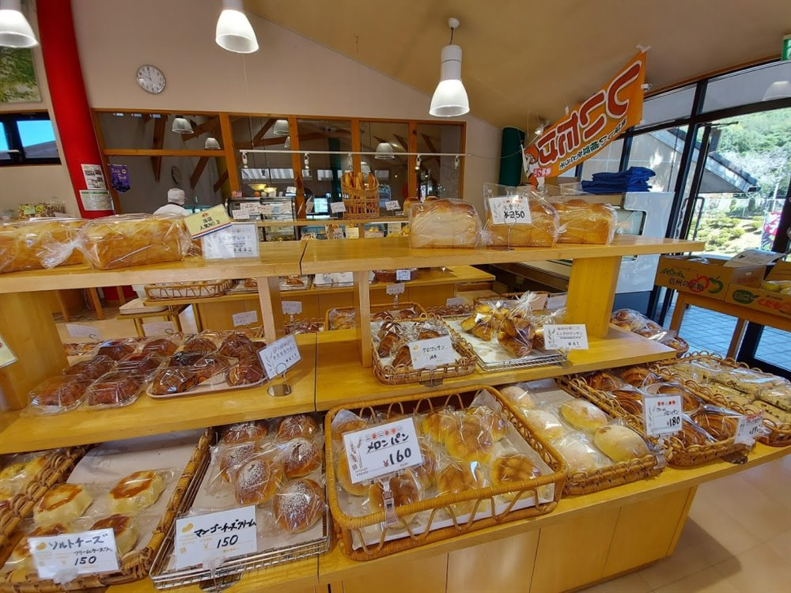
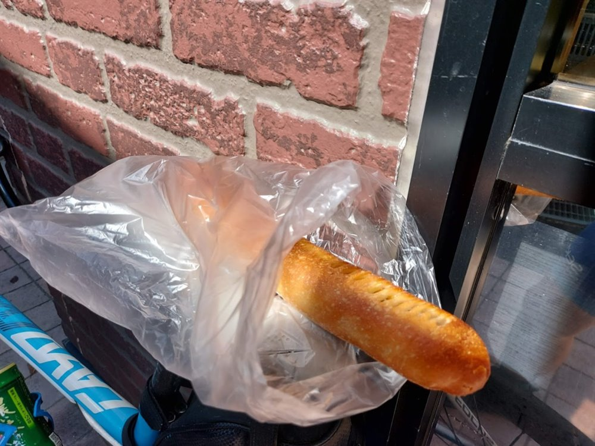
東濃の久須見交差点の近くにあるパン屋さんで､東濃デスライドの途中で立ち寄るお店です｡広い店内にパンがずらりと並びます｡
おすすめはスティック状のパン｡背中のポケットに差しやすく､走りながら食べられる､サイクリストにうれしいパンです｡
立ち寄れるコース: 東濃デスライド
農村景観が広がる富田の薪窯パン屋さん、評判のベーグルが楽しみな一軒
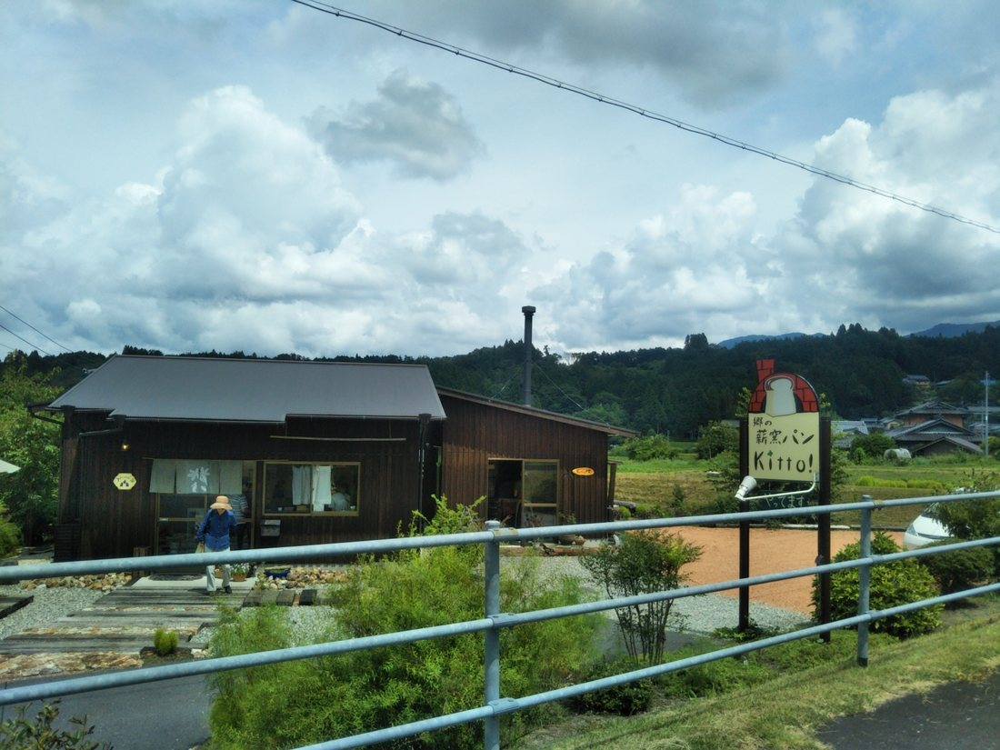
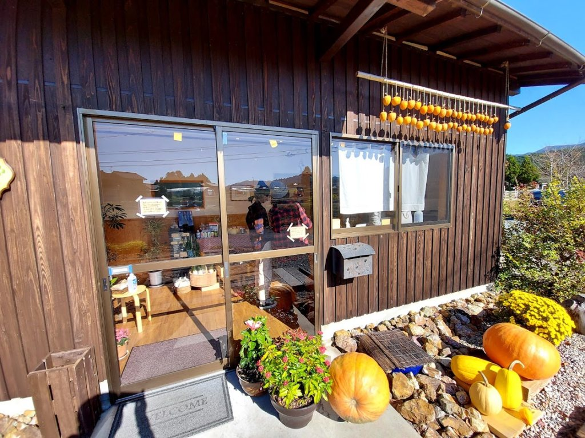
恵那市岩村町の富田地区､日本一とも称される農村風景の一角にある薪窯のパン屋さんです｡茅葺き屋根の集落にほど近く､のどかな田園風景を眺めながらたどり着けます｡
人気はベーグルで､訪れた日にはお客さんが次々に訪れる賑わいでした｡地元のイベントでは､ここのパンを選べる自主エイドが登場し､参加者にとても喜ばれました｡
ベーグルが売り切れの日でも､大きなパンをちぎりながら走る楽しみがあります｡岩村城下の散策や根の上高原へ向かう途中の補給スポットとして､ぜひ立ち寄りたいお店です｡
日吉高原の結節点にある､通称ざわしょー
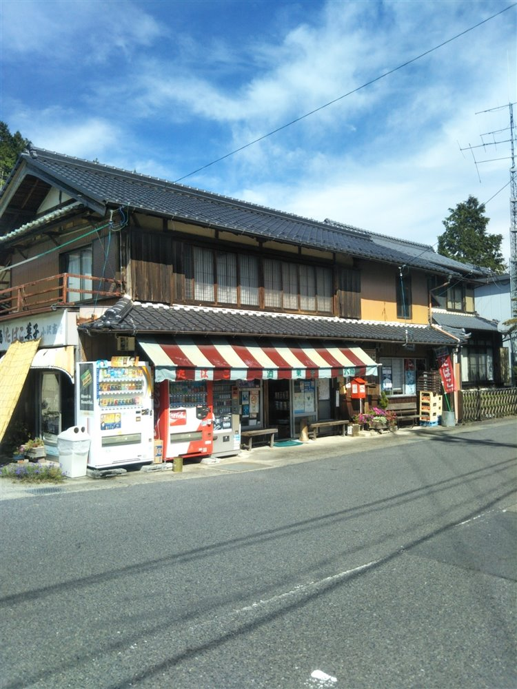
日吉高原のちょうど真ん中にあるお店で､東濃や中山道方面のライドで立ち寄る､サイクリストの休憩スポットです｡通称｢ざわしょー｣｡ジュースを買って一休みするのが定番です｡
店の前はいつも賑やかで､みんなの笑い声が高原に響きます｡お出かけの前に営業日をたしかめて､余裕をもってどうぞ｡
元祖･竈門炭治郎カラーのお店｡アイス･パン･お菓子が豊富
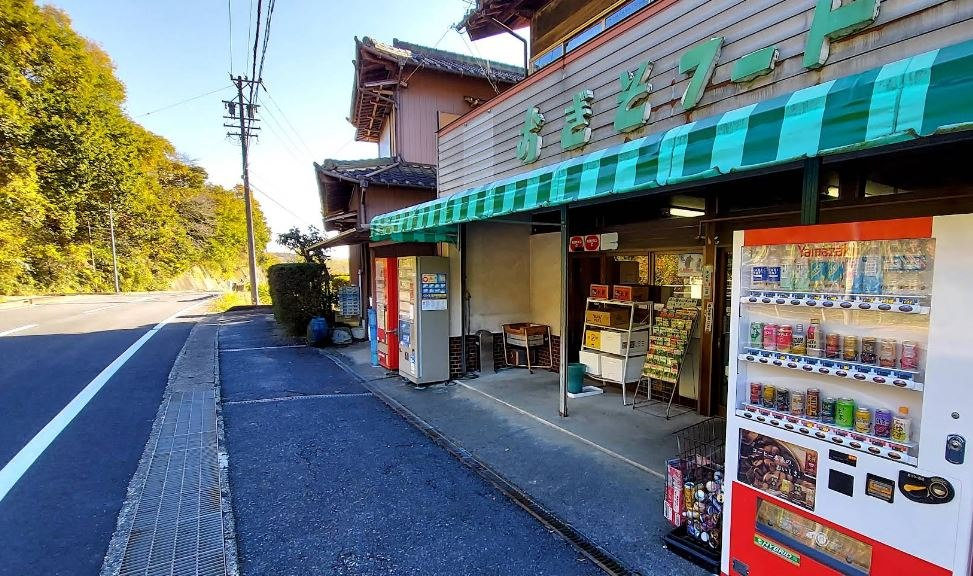
瑞浪にある､元祖･竈門炭治郎カラーのお店です｡こちらのほうが元祖です｡
アイス､パン､お菓子など､品ぞろえが豊富です｡お店の前にはビール瓶の桶があるので､反対側にして椅子にしましょう(公式)｡
潮南の頂上にある､けんちん汁の直売所
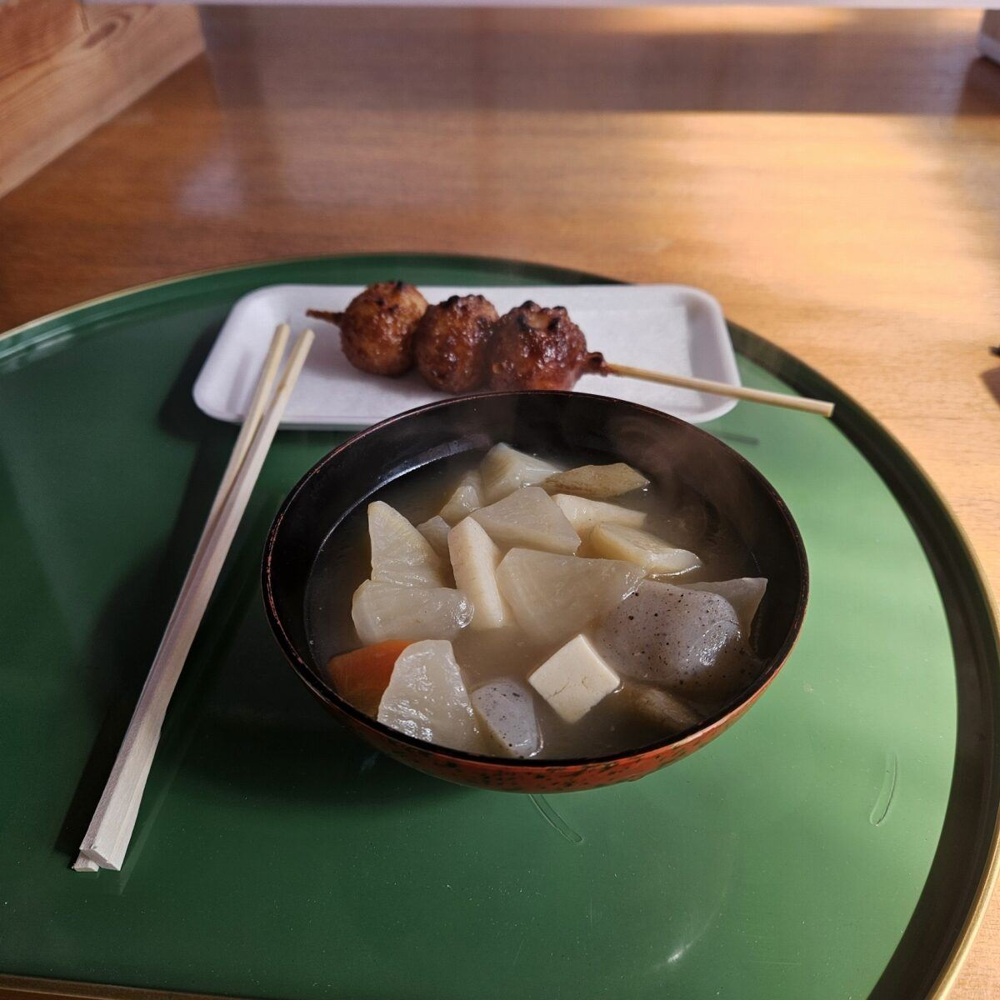
八百津の潮南へ登る峠の頂上､標高500mほどのところにある直売所です｡ここがあるおかげで､標高差400mを一気に登っても安心です｡
名物のけんちん汁は､だしがしっかり出ていて､ほくほくでした｡温かい汁ものが体にしみる､登りの途中のごほうびです｡
ボリューミーなたこ焼きと､コテコテの演歌が特長
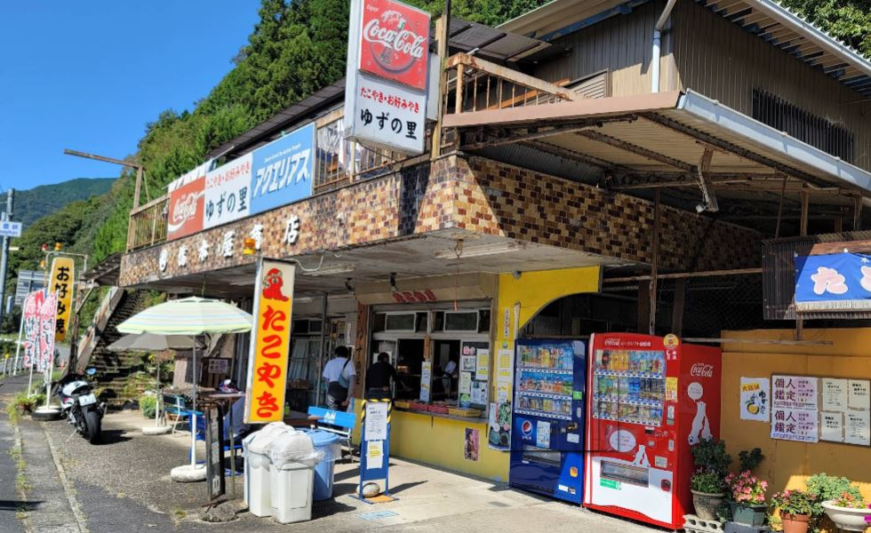
恵那の飯地にある､たこ焼きとお好み焼きのお店です｡昭和の雰囲気が残る建物に､たこ焼きののぼりが目印です｡
特長は､ボリュームたっぷりのたこ焼きと､店内に流れるコテコテの演歌です｡いちばん小さいセットでも6個入りで､食べごたえがあります｡春のセキサイ笠置山グランフォンド2018では､エイドポイントにもなりました｡
パンチ力のあるたこ焼きで､このあとの高原の峠も元気に登れます｡
地元のおばあちゃんたちの手づくり。五平餅やお弁当､お惣菜がならぶ
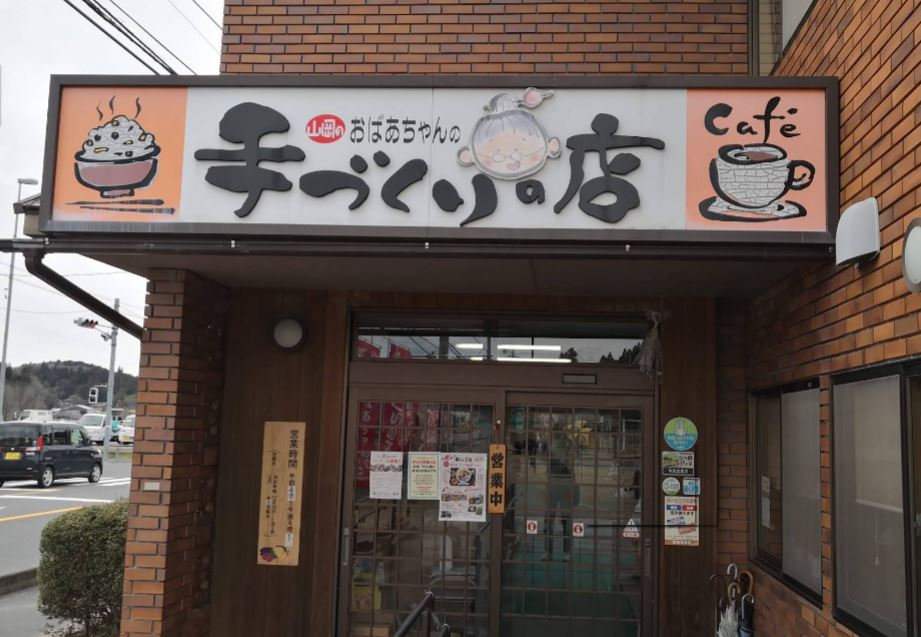
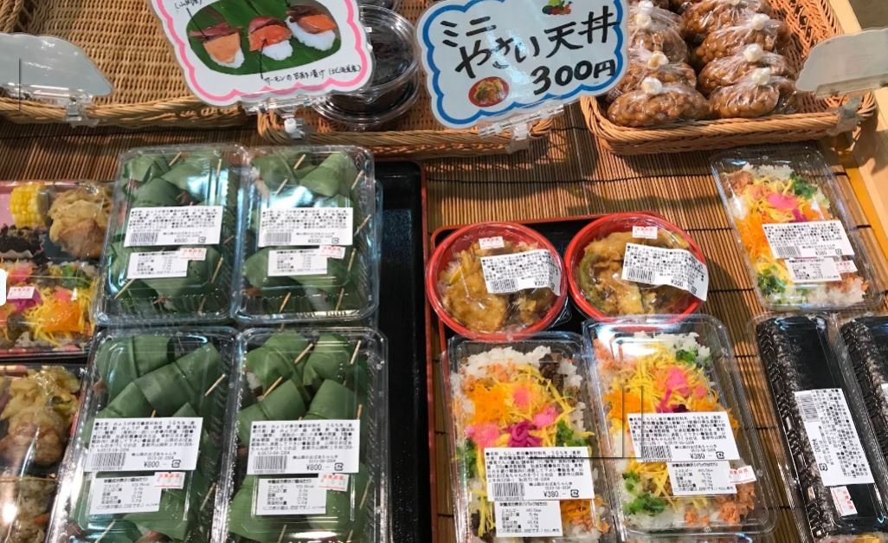
恵那市山岡の､｢おばあちゃんの里山岡｣にあるお店です｡かわいいおばあちゃんの看板が目印で､地元のおばあちゃんたちの手づくりの味が楽しめます｡
店先には､朴葉にくるまれた五平餅やちらし寿司､ミニやさい天丼､のり巻きなどがならびます｡どれもやさしい味で､ライドの補給にぴったりです｡カフェもあるので､ひと休みもできます｡
標高が高い山岡の高原にあり､岩村や東濃方面のライドでよく立ち寄る補給ポイントです｡
付知サイクリングの必須スポット｡珍しい食材が並ぶ､食のセレクトショップ
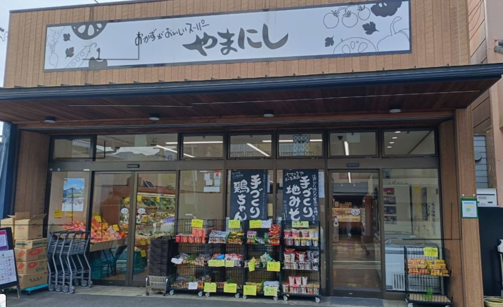
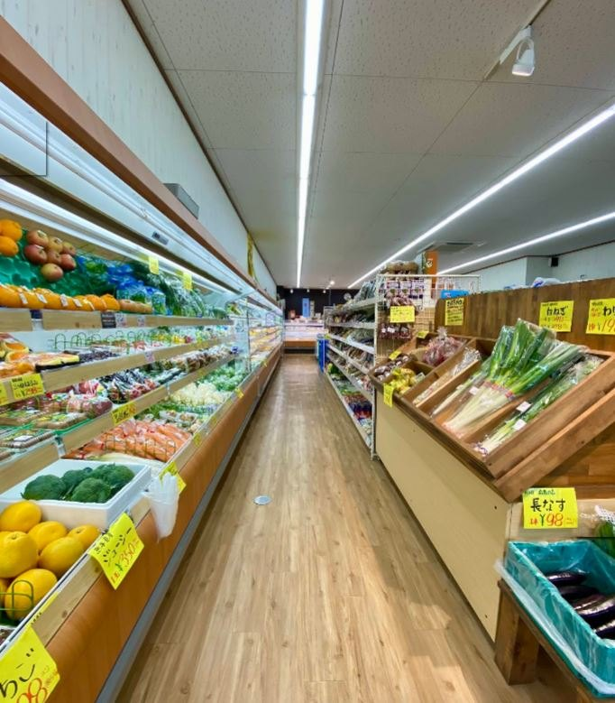
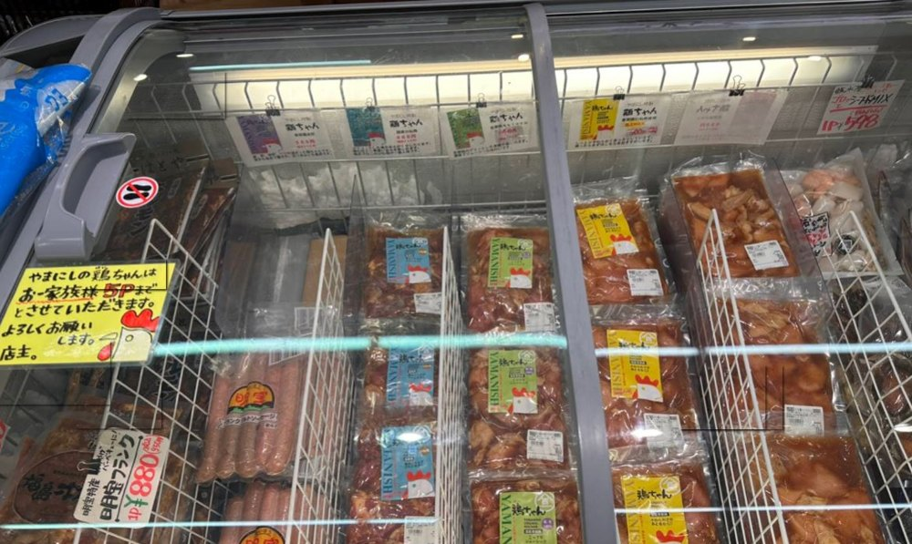
付知サイクリングでは必須のお店といえば､スーパーやまにしです｡日本一のスーパーになったことでも知られています｡
食のセレクトショップとして､珍しい食材が豊富にそろっています｡自家製醤油でつくるケイちゃんも､このお店ならではの特徴です｡
ケイちゃんは冷凍で買えますが､背中のポケットに入れるにはかなり冷たいほどしっかり冷えています｡持ち帰りには保冷の工夫があると安心です｡
蛭川の丘の上に観覧車が見える､遊園地とプールの東濃のレジャー施設
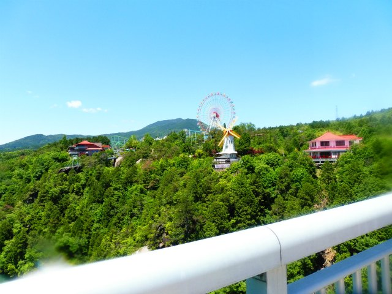
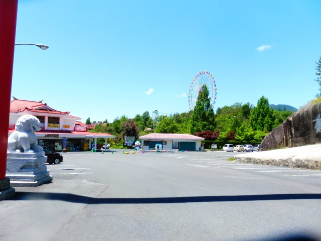
恵那市蛭川にある遊園地です｡丘の上にそびえる観覧車が遠くからでも目印になり､周囲には天海苑という施設もあって､蛭川の一大観光地になっています｡
2017年の第8回東濃グランフォンドでは､コースの途中でこの場所を通過しました｡ブログでは､毎年夏に訪れるとのことで､｢遊園地で暑くなったらプールへ､プールで冷えたら遊園地へ｣と交互に遊べるのが楽しい､と紹介しています｡
ここから北上して蛭川の農村景観の中を走ると､博石館のエイドステーションがあります｡ライドのあとに家族で楽しめるスポットとしても覚えておきたい場所です｡
瑞浪の高原をのぼりきった先にある､東濃の休憩ポイント
土岐市の道の駅 志野･織部です｡瑞浪方面から走ると､麓から約150mのぼったところにあります｡
ここから側道を抜けて御嵩方面へ向かうと､ゴルフ場ぞいの気持ちのいい道が続きます｡晴れた日には､御嶽山の姿も見ることができました(2019年)｡
東濃最大級のロード系プロショップ｡東濃グランフォンドの主催者
東濃最大級のロード系プロショップです｡せきサイのメンバーにも､ここに所属しているガチ勢がいるイメージです｡
取り扱い商品もメーカーも幅広いので､レースに参加するなら､まず候補に入るお店でしょう｡また､大人気イベント｢東濃グランフォンド｣を主催する､岐阜県最大級のサイクルイベンターでもあります｡
御嵩･可児方面ならこのお店｡サイクリングを楽しむ､ファン系の地域密着ショップ
御嵩･可児方面なら､地域密着のサイクルショップTOMOSです｡DADDYがガチ系なら､こちらはファン系のショップ｡サイクリングを楽しもう､というスタンスのお店です｡
マウンテンバイクにも強いので､興味のある方はぜひ｡
※紹介は､トマト工業ブログ(2016年〜2026年)の記事をもとにしています｡営業時間や定休日は変わることがあるので､お出かけの前にご確認ください｡